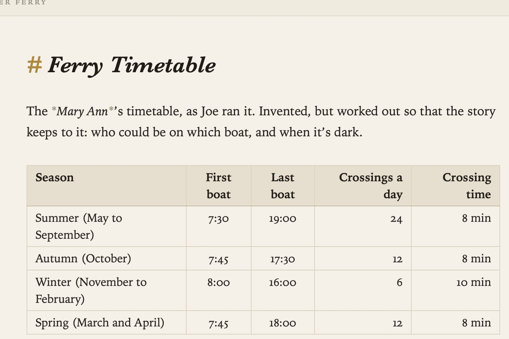

Pictures and Tables
Pictures and tables are ordinary Markdown in Grasmere, drawn on the page so you see what they look like.
Pictures
A line that’s just a picture link shows the picture beneath it:

The Markdown stays on the line above the picture, so you can still edit the caption and the address.
Adding a picture
- Paste a screenshot or a copied image, or drop an image file onto a note. Grasmere saves it in the project’s
mediafolder and links it where you were typing. - Drop a video onto a note in the same way. It’s linked like a picture, and plays on a website you build from the project.
- Drag a picture from the contents into a note to link it.
- Link to a picture on the web with
. Grasmere downloads it to show it.
Working with pictures
- Right-click a picture for Copy Image and Show in Finder.
- Rest the pointer on a link to a picture to see a preview.
- Rename a picture in the contents and the links to it follow, just like a note’s.
Settings
- Settings ▸ General ▸ Save in these folders ▸ Pictures and videos chooses the folder for pasted and dropped pictures and videos (
mediaby default, orimagesin a project that already has that folder). - Settings ▸ General ▸ Show images from the web can be turned off. Downloading a picture tells its website that you opened the note.
- Settings ▸ Appearance ▸ Show images in the contents lists pictures alongside your notes.
Tables
Tables are drawn as tables until you click into them. Then you edit the Markdown, and when you click away, the table is drawn again.

| Crop | Sow | Harvest |
|:---|:---:|:---:|
| Garlic | October | July |
- Format ▸ Insert Table (⌥⌘T) starts a new one.
- Tab and ⇧Tab move between cells, and line the columns up as they go.
- The colons in the second line set each column’s alignment: left, centre or right.
Related
- Writing and Formatting
- Quick Capture and Sharing, for saving pictures and PDFs from the web